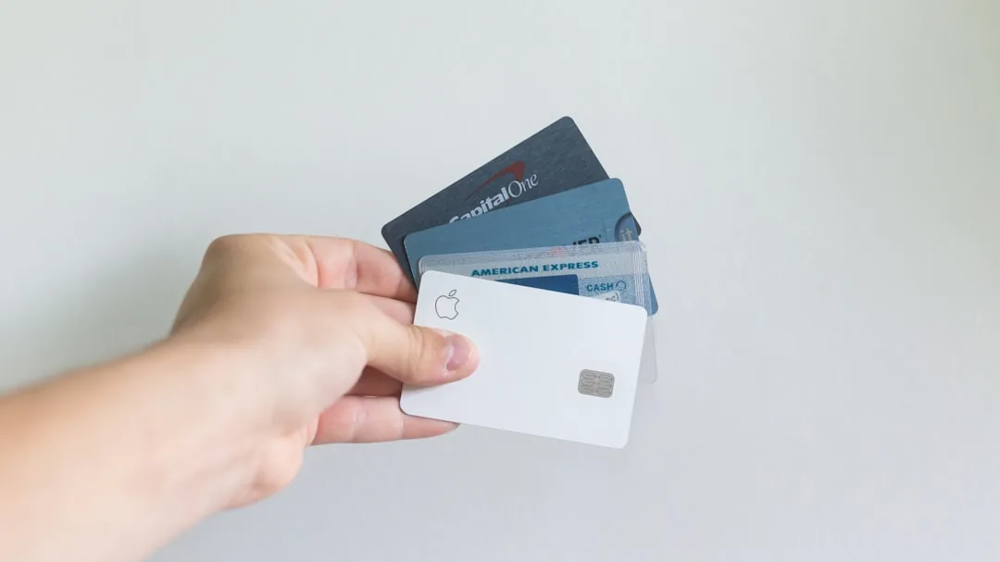
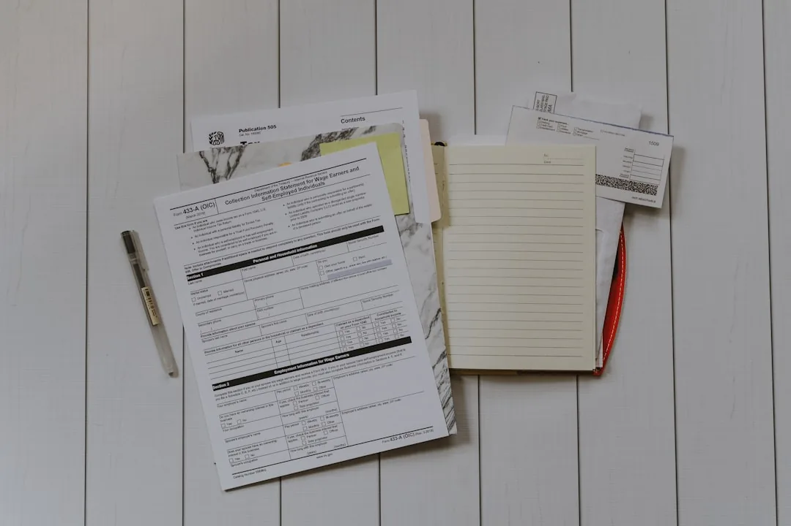

Advogado do Consumidor em Florianópolis: Quando Procurar
Quem compra, contrata ou viaja em Florianópolis já enfrentou, ou ainda vai enfrentar, algum problema de consumo. Cobrança estranha na fatura, nome negativado sem motivo, produto que quebra na primeira semana, reserva de temporada que não existia. O direito do consumidor foi criado exatamente para essas situações. Mesmo assim, a maioria das pessoas conhece pouco as proteções que já possui.
Este guia explica os problemas mais comuns na capital catarinense e o que o Código de Defesa do Consumidor (CDC) garante na prática. Você também vai entender quais problemas você consegue resolver sozinho e em que momentos um advogado de direito do consumidor em Florianópolis faz diferença real. No final, respondemos às dúvidas mais comuns sobre o assunto.
Os problemas de direito do consumidor mais comuns em Florianópolis
Florianópolis vive de comércio, serviços e turismo, e quase tudo hoje passa por contratos digitais. Com tanta relação de consumo acontecendo ao mesmo tempo, o conflito vira rotina. Conhecer os casos mais frequentes ajuda a identificar a própria situação e a escolher o caminho certo.
Cobrança indevida e o direito à devolução em dobro
A cobrança indevida aparece de muitas formas: serviço nunca contratado na fatura do cartão, mensalidade que continua após o cancelamento, tarifa sem previsão em contrato, valor duplicado na conta de telefone. Na capital, os relatos mais comuns envolvem planos de saúde, academias, telefonia, internet e assinaturas digitais.

O CDC, que é a Lei 8.078 de 1990, trata do assunto sem rodeios. O artigo 42, parágrafo único, garante a quem pagou valor indevido o direito à devolução em dobro, com correção monetária e juros. A única exceção é o engano justificável, que o fornecedor precisa provar. Portanto, guarde faturas, comprovantes e protocolos: esses documentos sustentam o pedido de restituição.
Negativação indevida no Serasa e no SPC
Ter o nome inscrito no Serasa ou no SPC (Serviço de Proteção ao Crédito) sem dever nada é um dos problemas que mais levam consumidores à Justiça. A negativação indevida costuma nascer de três situações: dívida já paga que continua registrada, contrato aberto por fraudadores em seu nome e cobrança de valor que você discute ou desconhece.
As consequências chegam rápido. Crédito negado, cartão bloqueado, financiamento recusado e constrangimento em compras do dia a dia. Não à toa, os tribunais reconhecem com frequência que a inscrição indevida em cadastro de inadimplentes gera dano moral, sem exigir prova de sofrimento específico. A primeira providência é pedir por escrito a exclusão do registro e guardar o protocolo do pedido.
Produto com vício: o prazo de 30 dias do fornecedor
Celular que desliga sozinho, eletrodoméstico que para na segunda semana, móvel entregue com peças faltando. O CDC chama esses defeitos de vício do produto. Pelo artigo 18, o fornecedor tem até 30 dias para consertar o item. Se o prazo termina sem solução, a escolha passa a ser sua: troca por produto novo, devolução do valor pago com correção ou abatimento proporcional do preço.
Há situações em que nem a espera de 30 dias se aplica. Quando o produto é essencial, como uma geladeira, ou quando o conserto comprometeria a qualidade ou o valor do bem, a lei dispensa esse prazo e a escolha do consumidor pode ser imediata (artigo 18, parágrafo 3º).
Muita gente aceita esperar meses pelo reparo ou recebe crédito na loja como única saída. Não é assim que a lei funciona. Depois dos 30 dias, quem decide o destino da compra é o consumidor, não a empresa.
Golpes e fraudes bancárias
Os golpes digitais cresceram, e Florianópolis não ficou de fora. Fraude no Pix, clonagem de cartão, falsa central de atendimento, boleto adulterado e empréstimo consignado nunca contratado estão entre os casos mais relatados. Em boa parte deles, o banco responde pela falha de segurança do serviço, mesmo quando o golpe partiu de terceiros. Preparamos um conteúdo específico sobre os direitos de quem sofreu fraude no Pix, com os passos imediatos após o golpe.
Serviços essenciais cortados indevidamente
Água, energia elétrica, telefone e internet são serviços essenciais. O corte indevido, feito sem aviso prévio ou com a fatura paga, viola o CDC e pode gerar indenização. Se o fornecimento foi suspenso com as contas em dia, registre protocolo, fotografe a situação e exija a religação imediata.
Aluguel de temporada e problemas em viagens
O verão movimenta reservas de pousadas, imóveis de temporada e pacotes turísticos em toda a ilha. Junto com o movimento vêm os conflitos: imóvel diferente do anunciado, reserva cancelada em cima da hora, taxas surpresa na chegada, anúncio falso em plataforma de hospedagem. Turista e morador estão igualmente protegidos pelo CDC nessas contratações.
A tabela abaixo resume o primeiro passo em cada situação e o caminho seguinte quando a conversa não resolve. Procon e juizado especial são caminhos gratuitos ou de baixo custo, explicados mais adiante neste guia.
| Problema | Primeiro passo | Se não resolver |
|---|---|---|
| Cobrança indevida | Contestar com a empresa e guardar o protocolo | Procon, consumidor.gov.br ou juizado |
| Negativação indevida | Pedir a exclusão por escrito | Ação judicial com pedido de dano moral |
| Produto com vício | Exigir o conserto no prazo de 30 dias | Troca, devolução ou abatimento; juizado |
| Fraude bancária | Registrar boletim de ocorrência e contestar no banco | Ação contra a instituição financeira |
| Corte de serviço essencial | Exigir religação com protocolo | Procon e ação com pedido de urgência |
| Aluguel de temporada | Reclamar na plataforma e reunir provas | Juizado especial ou ação judicial |
Atenção: guarde tudo por escrito desde o primeiro contato. Protocolo, e-mail, conversa de aplicativo e fatura são as provas que decidem a maioria dos casos de direito do consumidor.
O que o Código de Defesa do Consumidor garante a você
O CDC parte de uma ideia simples: consumidor e empresa não estão em pé de igualdade. A empresa redige o contrato, controla os sistemas e conhece o produto. O consumidor, na maior parte das vezes, apenas confia. Para equilibrar essa relação, a lei criou proteções que valem em qualquer compra ou contratação, de padaria a banco digital. Três delas merecem explicação com calma.
Inversão do ônus da prova explicada de forma simples
Em um processo comum, quem faz uma afirmação precisa prová-la. Mas a empresa guarda os contratos, os registros de sistema e as gravações de atendimento. O consumidor, quase nada.
Por isso o CDC autoriza o juiz a inverter o ônus da prova. Em termos simples: em vez de você provar que não contratou aquele serviço, a empresa é que precisa provar que você contratou. Se ela não apresenta o contrato assinado ou a gravação da venda, a falta dessa prova pesa contra a empresa, e a versão do consumidor tende a prevalecer. O juiz decide caso a caso: a inversão cabe quando a alegação é verossímil ou quando o consumidor é hipossuficiente, ou seja, sem condições de produzir a prova que está nas mãos da empresa, situação frequente nos conflitos de consumo.
Responsabilidade objetiva do fornecedor
Outro pilar do direito do consumidor é a responsabilidade objetiva. A empresa responde pelos danos que o produto ou o serviço causar, independentemente de culpa. Você não precisa demonstrar que o banco foi negligente ao processar uma transferência fraudulenta, nem que a loja agiu de má-fé ao vender o item com defeito. Basta provar o dano sofrido, o defeito do produto ou do serviço e a ligação entre eles.
O texto integral dessas garantias está no Código de Defesa do Consumidor, a Lei 8.078/1990, publicado no site do Planalto. Além disso, reunimos um resumo prático dos direitos básicos do consumidor para consulta rápida.
Dano moral nas relações de consumo
O dano moral compensa o abalo que vai além do prejuízo financeiro. Nome negativado sem dívida, energia cortada com contas pagas, horas de espera em atendimentos que nada resolvem, tratamento humilhante em loja. Nessas situações, a indenização compensa também o desgaste e o tempo que o problema tomou de você, não só o que saiu do bolso.
O valor varia caso a caso. Depende da gravidade do fato, da conduta da empresa, da repetição do problema e da condição econômica das partes. Nenhum profissional sério promete valor certo de indenização antes de estudar o caso, e você deve desconfiar de quem prometer.
Se você reconheceu a sua situação em algum desses exemplos, uma análise técnica dos documentos ajuda a definir o melhor caminho antes de qualquer decisão. A equipe da Mussi Advocacia & Consultoria atende consumidores em Florianópolis e avalia cada caso individualmente, com atenção aos prazos e às provas disponíveis.
Dá para resolver sem advogado? Procon, consumidor.gov.br e juizado
Nem todo conflito de consumo precisa virar processo. Florianópolis oferece caminhos gratuitos que resolvem boa parte das reclamações, e conhecer o alcance de cada um evita perda de tempo.
Procon: o caminho administrativo
O Procon (Programa de Proteção e Defesa do Consumidor) recebe reclamações, notifica a empresa e promove audiências de conciliação. O órgão também pode multar fornecedores que descumprem o CDC. O consumidor da capital conta com o Procon municipal, além da estrutura estadual; consulte os canais oficiais para endereços e agendamento.
O Procon funciona bem quando a empresa quer preservar a própria imagem e resolver. O limite do órgão, porém, é claro: ele não pode obrigar o fornecedor a pagar indenização. Quando a empresa ignora a notificação, o caso precisa seguir para a Justiça.
Plataforma consumidor.gov.br
O consumidor.gov.br é uma plataforma pública e gratuita do governo federal que conecta consumidores às empresas cadastradas. Você registra a reclamação, a empresa tem até dez dias para responder e todo o histórico fica documentado.
Mesmo quando a plataforma não resolve, a resposta da empresa vira prova. Se o fornecedor reconhece o erro por escrito e depois não corrige, esse registro fortalece a futura ação judicial.
Juizado especial cível: até 20 salários mínimos sem advogado
Os juizados especiais cíveis julgam causas de menor complexidade com mais rapidez e sem custas no início. A Lei 9.099/1995, conhecida como Lei dos Juizados Especiais, define os limites. Até 20 salários mínimos, você pode propor a ação sozinho, sem advogado. De 20 a 40 salários mínimos, a presença do advogado passa a ser obrigatória. Outra facilidade: a ação do consumidor pode ser proposta no juizado do próprio domicílio, sem precisar ir até a cidade da empresa.
Na prática, muitos consumidores usam o juizado para casos simples: cobrança indevida de valor baixo, produto não entregue, cancelamento de compra. Para causas maiores ou com provas complicadas, o cenário muda. A tabela compara os três caminhos.
| Critério | Procon e consumidor.gov.br | Juizado especial cível | Ação na Justiça comum |
|---|---|---|---|
| Custo inicial | Gratuito | Sem custas iniciais | Custas processuais |
| Advogado | Não exige | Facultativo até 20 salários mínimos | Obrigatório |
| Limite de valor | Sem limite para reclamar | 40 salários mínimos | Sem limite |
| Força da decisão | Não obriga a indenizar | Sentença judicial | Sentença judicial |
| Indicado para | Casos simples e empresas colaborativas | Causas de menor valor e complexidade | Valores altos, provas complexas, dano moral relevante |
Dica: comece pelo caminho gratuito quando o caso for simples. O registro no Procon ou no consumidor.gov.br não impede a ação judicial depois e ainda gera provas para ela.
Quando o advogado de direito do consumidor faz diferença
Os caminhos gratuitos têm alcance limitado. Em determinadas situações, insistir neles sem orientação técnica custa caro, em tempo e em dinheiro. Veja os cenários em que a atuação de um advogado de direito do consumidor em Florianópolis muda o rumo do caso.

Causa acima do teto do juizado. Quando o prejuízo material somado ao dano moral supera 40 salários mínimos, o juizado deixa de ser opção. Nesses casos, a ação tramita na Justiça comum, onde o advogado é obrigatório e a técnica processual pesa mais.
Dano moral relevante. Calcular e fundamentar um pedido de indenização exige método. O advogado reúne decisões anteriores de casos parecidos (precedentes), demonstra a extensão do abalo e evita pedidos fora da realidade, que enfraquecem o processo. Uma petição mal construída pode reduzir bastante o valor final.
Empresa que ignora o Procon. Fornecedor que não responde à notificação administrativa dificilmente muda de postura sozinho. A citação judicial, com risco de condenação, costuma produzir outro nível de atenção. Nesse momento, a reclamação registrada vira munição para a ação.
Provas complexas. Fraudes bancárias, contratos extensos, extratos que precisam de análise, gravações de atendimento e laudos técnicos pedem olhar profissional. Saber o que pedir ao juiz, inclusive a inversão do ônus da prova, é parte decisiva da estratégia.
Recursos e fase de execução. Perder em primeira instância não encerra a discussão, e ganhar também não garante o pagamento imediato. Prazos de recurso são curtos e técnicos. E transformar a sentença em dinheiro na conta exige medidas de execução que o leigo não domina.
Há ainda a experiência local: quem atua todos os dias nos juizados e varas da capital conhece a rotina dos cartórios, os entendimentos dos julgadores e o tempo real de cada etapa, o que evita expectativas fora da realidade. Se o seu caso envolve algum desses cenários, a Mussi Advocacia & Consultoria pode examinar os documentos e indicar, com franqueza, se a via judicial compensa.
Como funciona a ação de consumo em Florianópolis na prática
Decidiu agir? O processo de consumo segue etapas razoavelmente previsíveis, ainda que o tempo de cada uma varie conforme o caso e a unidade judicial.
Documentos que você deve reunir
A força de uma ação de direito do consumidor está nos documentos. Antes da primeira reunião, separe o que tiver:
- Contrato, pedido, orçamento ou anúncio da oferta;
- Comprovantes de pagamento, faturas e extratos;
- Protocolos de atendimento, e-mails e conversas de aplicativo;
- Fotos e vídeos do produto ou da situação;
- Boletim de ocorrência, quando houver fraude;
- Registro da reclamação no Procon ou no consumidor.gov.br, se existir.

Nada disso precisa estar perfeito, mas a organização em ordem cronológica acelera a análise e evita que um detalhe passe despercebido.
Prazos que merecem atenção
O CDC trabalha com dois tipos de prazo. A lei separa duas situações: o vício, quando o produto ou serviço não funciona como deveria, e o fato, quando o defeito causa um prejuízo além do próprio produto, como uma fraude ou um acidente. Para reclamar de vício, o consumidor tem 30 dias para serviços e produtos não duráveis (alimentos, serviços de limpeza) e 90 dias para os duráveis (celular, geladeira, móveis), contados da entrega ou do surgimento do defeito oculto. Já para pedir reparação de danos causados por fato do produto ou do serviço, o prazo é de cinco anos.
Importante: prazos em direito do consumidor passam mais rápido do que parecem. Reclamar formalmente dentro do período correto preserva o seu direito; deixar para depois pode extingui-lo.
O que esperar do processo
Após o protocolo da ação, a empresa é citada, ou seja, informada oficialmente da ação e chamada a se defender, e, na maioria dos ritos, ocorre uma tentativa de conciliação. Grande parte dos conflitos de consumo termina em acordo nessa fase. Se não houver acordo, o processo segue com defesa, provas e sentença.
O tempo total varia. Casos simples no juizado costumam andar mais rápido; ações com perícia ou recurso demoram mais. Nenhum advogado pode garantir resultado ou data de término. A atuação técnica oferece outra coisa: pedidos bem fundamentados, prazos respeitados e o caso conduzido pelo caminho com melhor chance de êxito.
Perguntas frequentes sobre direito do consumidor
Preciso de advogado para reclamar no Procon de Florianópolis?
Não. O atendimento do Procon é gratuito e qualquer consumidor pode registrar a reclamação sozinho, com documento de identidade e provas da relação de consumo. O advogado passa a ser necessário quando o caso vai para a Justiça comum ou quando a causa no juizado supera 20 salários mínimos.
Cobrança indevida sempre gera devolução em dobro?
Em regra, sim. O artigo 42, parágrafo único, do CDC garante a devolução em dobro do que foi pago indevidamente, com correção e juros. A exceção é o engano justificável, que a empresa precisa comprovar. Se você apenas foi cobrado, mas não chegou a pagar, tem direito ao cancelamento da cobrança e, conforme o caso, à indenização.
Quanto tempo a empresa tem para consertar um produto com defeito?
O fornecedor tem até 30 dias para sanar o vício, conforme o artigo 18 do CDC. Vencido o prazo sem solução, o consumidor escolhe entre a troca do produto, a devolução do valor pago com correção monetária ou o abatimento proporcional do preço. A escolha é do consumidor, não da loja.
Negativação indevida no Serasa ou no SPC gera dano moral?
Os tribunais entendem, de forma amplamente majoritária, que a inscrição indevida em cadastros como Serasa e SPC gera dano moral por si só, sem necessidade de provar sofrimento. O valor da indenização varia conforme as circunstâncias. Quem já possui outra negativação legítima anterior, porém, pode ter o pedido limitado à exclusão do registro.
Qual o prazo para entrar com ação de consumo?
Depende da natureza do problema. Vícios de produto ou serviço seguem prazos de 30 dias para serviços e produtos não duráveis (alimentos, serviços de limpeza) e 90 dias para os duráveis (celular, geladeira, móveis). Danos causados por fato do produto ou do serviço, como fraudes bancárias e acidentes de consumo, prescrevem em cinco anos, isto é, depois desse período o direito de processar se perde. Na dúvida, procure orientação o quanto antes para não perder o prazo do seu caso.
No fim das contas, o roteiro é simples. Guarde todas as provas desde o primeiro contato com a empresa. Nos casos simples, comece pelos caminhos gratuitos, como o Procon e o consumidor.gov.br. E, nos cenários que descrevemos acima, como causas de valor alto, dano moral relevante ou provas complexas, procure um advogado.
Se você enfrenta um conflito de consumo em Florianópolis e quer entender as opções do seu caso, a Mussi Advocacia & Consultoria está à disposição para uma avaliação criteriosa, do primeiro documento à última etapa do processo.